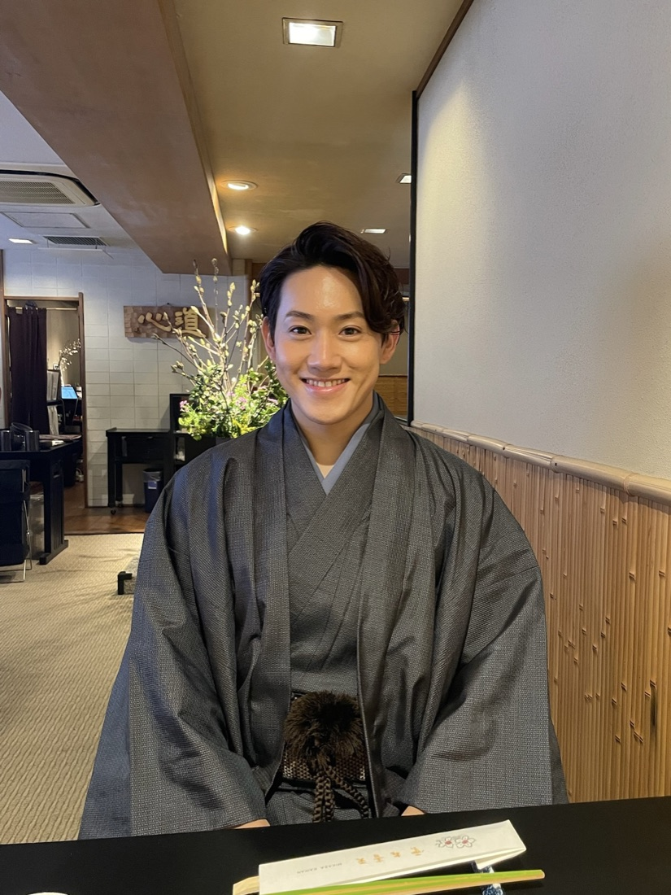
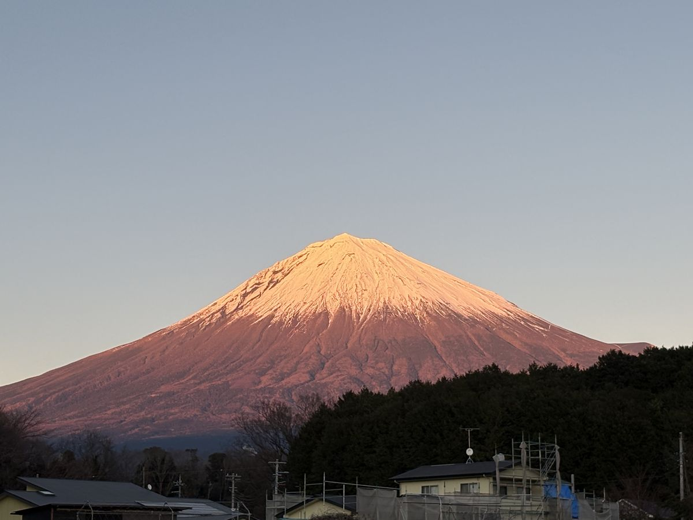

The founder's story

I was born and raised at the foot of Mt. Fuji — eighteen years with the mountain as the shape of every morning, not a destination on anyone's itinerary.
Then I left. Four years in Osaka, studying the language and society of Northern Europe; a year interning in Vietnam; six and a half in Tokyo, hosting foreign executives for a multinational company and working alongside colleagues and clients from all over the world. I spent my twenties learning how to make people from somewhere else feel at home in Japan.
What kept catching my eye was how most visitors met Mt. Fuji — herded into 50-seat coaches, photographed at the same three crowded viewpoints, bused back having barely heard a word in their own language. For the people who grew up here, the mountain isn't a backdrop. It's a presence, a weather system, a deity in some senses, a story your grandmother told you.
"I want guests to leave knowing why this mountain matters here — not just that it's tall."

So I came home, and started curating the parts and pieces of this place I love most into a four-hour day. Private. Slow. Local-side. Bilingual. Built around your schedule, not ours. Maximum five guests, because past that you stop being on a trip and start being on a tour.
These days I'm less often the one guiding — that's deliberate. The tours run with two bilingual guides I work with: same routes, same instincts, same stories to tell. The standard is the one I'd want if I were the guest.
Who guides your day
Every tour is led by one of two bilingual guides Takumu works with — a consistent pair, not a freelance pool. Same hidden viewpoints, same family-run lunch spots, same instinct for reading the weather and rerouting by the hour. You'll be told who your guide is before the tour.
What we mean by "Soul"
It's the word in our name, and it's a promise about how we guide: every stop comes with its why. Why most Japanese visit shrines without being religious, why the streets stay spotless with no trash cans, why everything at the mountain's foot tastes of its water — we wrote the whole philosophy down here.